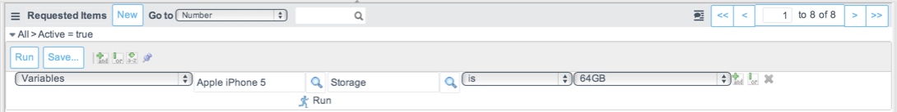

Reporting on Service Catalog Variables
| |
Note: This article applies to Fuji. For more current information, see Service Catalog Variable Reports at http://docs.servicenow.com
The ServiceNow Wiki is no longer being updated. Please refer to http://docs.servicenow.com for the latest product documentation. |
Contents
1 Overview
Administrators and catalog administrators can:
- Filter lists of items and catalog tasks based on variable usage.
- Create list reports that use service catalog variables and request items.
2 Filtering By Variable Usage
You can create a filter for lists to show which items and catalog tasks have had specific variable values selected. This feature is available starting with the Eureka release.
For example, in the demonstration data provided, the Apple iPhone 5 catalog item has a variable to select the storage capacity, 16Gb, 32Gb or 64Gb. You can create a filter to show how many users selected specific capacities when they ordered this item.
- Navigate to Service Catalog > Open Records > Items to display the list of requested items.
- Expand the condition builder.
- Add a filter that identifies the appropriate variables and conditions.
- For example, you might create this filter: [Variables] [Apple iPhone 5] [Storage] [is] [64Gb].
- 
- Click Run to filter the list.
- Note: The filter uses the information stored in the Variable [item_option_new] table.
{kind=link}
| |
Note: Variables cannot be included as a column in a list. |
2.1 Filtering by Variable Set Usage
You can filter on a variable contained in a variable set without specifying an item. This allows you to display the value of a particular variable across all items that use the variable set.
For example, if a variable set includes a variable named color, you can filter on that variable across multiple items, using a filter such as [Variable] [<blank>] [color] [is] [green].
| |
Note: Ensure the Item field is blank before running the filter, as this field may be auto-populated based on a previous filter you have run. |
3 Creating a Report with Request Items
You can create a report with service catalog variables and request items. The following additional fields are available for reports based on the Requested Item [sc_req_item] table, starting with the Fuji Release:
- Group by
- Stacked by
To select an item and variable to group or stack data by, select Variables from the Group by or Stacked by list when you create the report.
You can also include the variables (such as color and storage) as columns on a list report based on requested items.
| |
Note: A requested item entry (sc_req_item) is only generated when an item is ordered through a catalog or order guide. |
Contents > Deliver > IT Services > Service Catalog Management
Contents > Use > Reporting > Application Reports